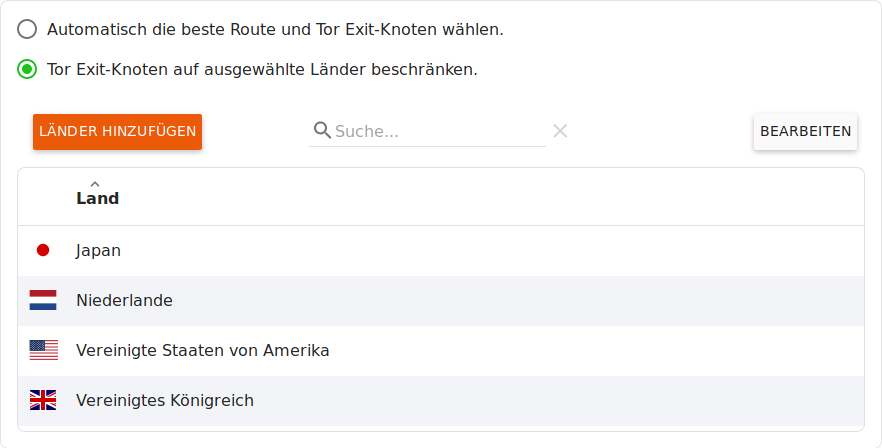
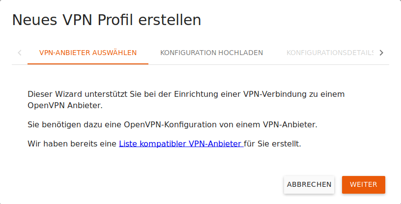
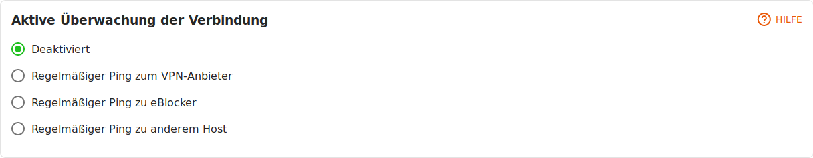

eBlocker Help > Wissensdatenbank > eBlocker Menü
eBlocker Base ✓ / eBlocker Pro ✓ / eBlocker Family ✓
Diese Seite ist weiter unterteilt in die folgenden Abschnitte:
Vorwort:
Das Tor-Netzwerk ist ein nicht-kommerzieller Zusammenschluss von Menschen auf der ganzen Welt, die kostenlos Netzwerk-Infrastruktur bereitstellen, damit Nutzer Ihre IP-Adresse beim Surfen im Internet anonymisieren können.
Das Tor-Netzwerk garantiert jedoch keine Verfügbarkeit oder Mindestbandbreite. Dies liegt leider auch außerhalb der Kontrolle von eBlocker. Wir können über den eBlocker nur einen sehr leichten Zugang zu Tor ermöglichen.
Tatsächlich ist bei Tor die Datenrate für das Streamen von Audio oder Video-Daten oftmals nicht ausreichend.
Die Anonymisierungsfunktion von Tor bringt keinen zusätzlichen Schutz, wenn Sie einen Dienst verwenden, bei dem Sie sich anmelden müssen (wie z.B. Online-Einkauf, Lesen von Web-Mails etc.): Der Anbieter weiß dann ohnehin, wer Sie sind. Gegebenenfalls könnten die Anbieter sogar bei der Nutzung von einer Tor-Netzwerkverbindung der Meinung sein, dass Ihr Konto missbraucht wird und dieses schlimmstenfalls sperren.
Wichtig ist primär, dass Sie beim Surfen – auch beim Einkauf oder Lesen von Web-Mails – nicht von Dritten unbemerkt beobachtet werden. Genau davor schützt Sie der eBlocker standardmäßig, indem alle Datensammler und Daten sammelnde Werbenetzwerke blockiert werden.
Unser Tipp:
Aktivieren Sie Tor nur dann, wenn Sie sensitive Inhalte abrufen und Sie sicherstellen möchten, dass Sie keinesfalls über Ihre IP-Adresse identifiziert werden können. Beispielsweise können Sie Tor bei Recherchen zu einem gesundheitlichen Problem einschalten, wenn Sie sicherstellen möchten, dass das Gesundheitsportal niemals Ihre Identität und damit eine Verbindung zur recherchierten Krankheit herstellen kann.
Für das Tor-Netzwerk gibt es zwei Optionen.
Automatisch die beste Route und Tor Exit-Knoten wählen.
Der eBlocker wählt automatisch die beste Route und die besten Tor Exit-Knoten.
Tor Exit-Knoten auf ausgewählte Länder beschränken.
Sollten Sie dennoch den Wunsch haben, die Tor Exit Knoten auf bestimmte Länder zu beschränken so können Sie hier den Tor Exit Knoten anhand des Landes, oder eine Liste von Ländern, auswählen.

Wenn Sie auf den Button Länder Hinzufügen klicken, dann können Sie weitere Tor Exit Knoten der Liste hinzufügen.
Klicken Sie auf den Button Bearbeiten, um einzelne Tor Exit Knoten zu löschen. Wählen Sie die gewünschten Tor Exit Knoten aus und klicken Sie anschließen auf den Button Land löschen.
Tipp:
Aus der Liste der angegebenen Tor Exit Konten sucht der eBlocker immer per Zufall einen Tor Exit Knoten aus. Wenn Sie aus nur einem bestimmten Land kommen möchten Dann suchen benutzten Sie nur einen Tor Exit Knoten, statt einer Liste von Tor Exit Knoten.
Hinweis:
Die Liste der Tor Exit Knoten steht für alle Geräte im in Ihrem Netzwerk zur Verfügung und kann nicht für ein Gerät individuell bestimmt werden.
Sie können die Tor-Netzwerk Verbindung entweder über die eBlocker Einstellungen in dem Menü Geräte für jedes Gerät individuell aktivieren / deaktivieren, oder bei jedem Gerät über das Dashboard die Tor-Netzwerk Verbindung aktivieren / deaktivieren.
Ein praktisches Beispiel für die Nutzung der Tor-Netzwerk Funktion finden Sie hier.
Anstelle des Tor-Netzwerks können Sie auch eine VPN-Verbindung über einen beliebigen VPN-Anbieter nutzen.
Achtung:
Durch die Nutzung der Services von VPN-Anbietern, können Ihnen zusätzliche Kosten entstehen. Die Verbindungsgeschwindigkeit kann ggf. vom VPN-Anbieter abhängig sein.

Klicken Sie auf den Button Bearbeiten, um ein VPN-Profil aus der Liste der VPN-Profile zu löschen. Wählen Sie das gewünschte VPN Profil aus und klicken Sie dann auf den Button Profil löschen.
Um eine neue VPN-Netzwerkverbindung (Profil) anzulegen, klicken Sie auf den Button Neuer VPN Anbieter. Es öffnet sich ein Assistent für neue VPN Verbindungen, dort müssen Sie die OpenVPN Konfigurationsdatei(en) Ihres VPN Providers hochladen und gegebenenfalls Ihren Benutzernamen und Ihr Passwort für den VPN Provider hinterlegen.

Abschließen vergeben Sie dieser neuen VPN Profil einen Namen und gegebenenfalls eine kurze Beschreibung. Abschließend können Sie in dem Assistenten bestimmten, ob dieses VPN-Profil in dem eBlocker Dashboard und in der eBlocker Controlbar zur Verfügung steht, ob der DNS-Server des VPN Providers gegebenenfalls benutzt werden soll und ob diese Verbindung vom eBlocker aktiv überwacht werden soll. Wenn Sie nun auf den Button Speichern klicken wird dieses neue VPN Profil zu der Liste der schon vorhandenen VPN Profile hinzugefügt.
Klicken Sie ein VPN Profil an, um dieses zu bearbeiten.

Sie sehen hier die Details des VPN-Profils und können die einzelnen Punkte Name, Beschreibung, Benutzername und das Passwort bearbeiten, in dem Sie auf den Stift klicken.

Manche VPN-Anbieter beenden inaktive Verbindungen oder verwenden ungewöhnliche Konfigurationen. Dies kann dazu führen, dass der eBlocker geschlossene Verbindungen ohne aktive Überwachung nicht erkennt. Falls Sie Probleme mit Verbindungsabbrüchen haben, können Sie hier eine aktive Überwachung der Verbindung aktivieren.
Regelmäßiger Ping zum VPN-Anbieter
Hier überprüft der eBlocker mit einer kurzen Abfrage, ob die Verbindung zu dem Zielserver des VPN Providers noch besteht.
Regelmäßiger Ping zu eBlocker
Hier überprüft der eBlocker mit einer kurzen Abfrage, ob eine Verbindung zu dem Webserver von eblocker.com aufgebaut werden kann.
Regelmäßiger Ping zu anderem Host
Hier überprüft der eBlocker mit einer kurzen Abfrage, ob eine Verbindung zu einem von Ihnen hinterlegten Webserver aufgebaut werden kann.

Hier können Sie festlegen, ob dieses VPN-Profil in dem eBlocker Dashboard und in der eBlocker Controlbar zur Verfügung stehen soll und ob der DNS-Server des VPN Providers gegebenenfalls benutzt werden soll.
Mit einem Klick auf den Button Assistent wiederholen können Sie den Assistenten für diese VPN-Verbindung erneut starten. Mit einem Klick auf den Button Verbindung testen können Sie prüfen, ob sich der eBlocker erfolgreich mit dem VPN-Server verbinden kann.
Ein praktisches Beispiel für die Nutzung der VPN-Netzwerk Funktion finden Sie hier.